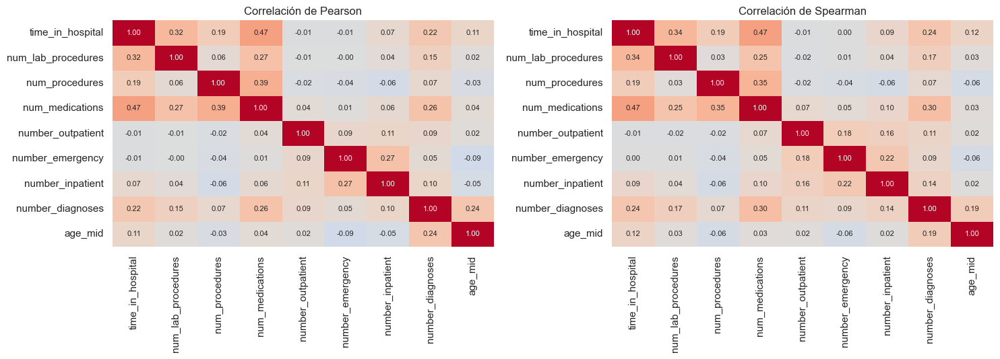
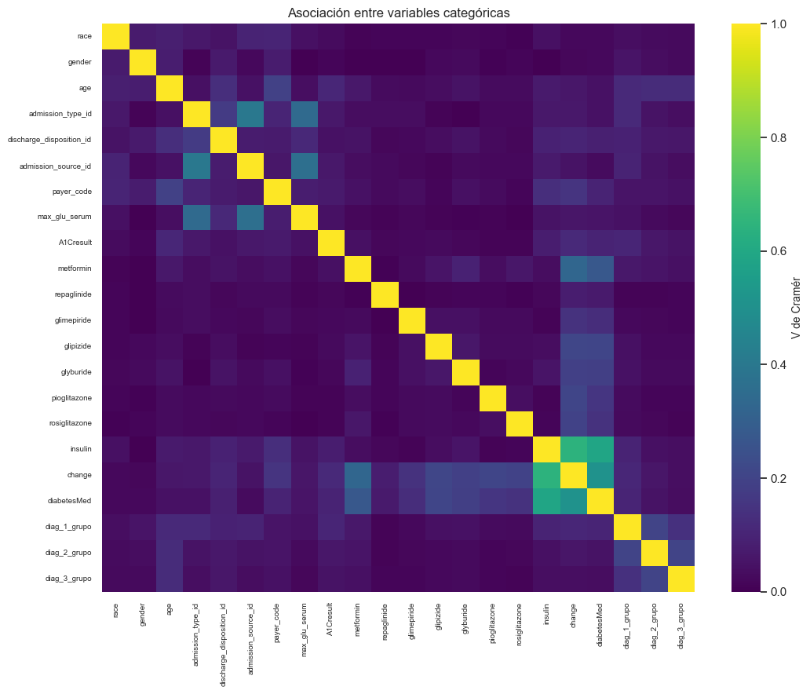
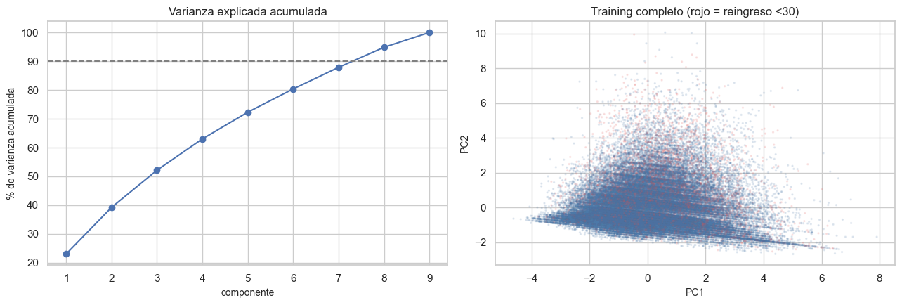

6. EDA multivariado#
Se revisan correlaciones, asociación entre categóricas, VIF, PCA y outliers multivariados mediante Isolation Forest. Todos los ajustes exploratorios usan únicamente training y no provocan eliminación automática de observaciones.
from pathlib import Path
import re, sys, warnings
import numpy as np
import pandas as pd
import matplotlib.pyplot as plt
import seaborn as sns
from IPython.display import Markdown, display
project_root = Path.cwd().resolve()
while not (project_root / "_config.yml").exists():
if project_root.parent == project_root:
raise FileNotFoundError("No se encontró _config.yml. Ejecuta el notebook dentro de la carpeta del libro.")
project_root = project_root.parent
if str(project_root) not in sys.path:
sys.path.insert(0, str(project_root))
for _folder in ("tables", "figures"): # se crean si no existen
(project_root / _folder).mkdir(exist_ok=True)
from src.project_utils import *
configure_plots()
pd.set_option("display.max_columns", 80)
pd.set_option("display.width", 170)
pd.set_option("display.max_colwidth", 70)
TABLES = project_root / "tables"
def md_out(text):
display(Markdown(text))
train = load_train()
frame = prepare_frame(train)
num_cols, cat_cols = column_types(frame)
y = frame[TARGET]
Correlación entre variables numéricas#
X = frame[num_cols]
pear, spear = X.corr(method="pearson"), X.corr(method="spearman")
fig, axes = plt.subplots(1, 2, figsize=(15, 5.5))
for ax, m, nombre in zip(axes, [pear, spear], ["Pearson", "Spearman"]):
sns.heatmap(m, annot=True, fmt=".2f", cmap="coolwarm", vmin=-1, vmax=1, ax=ax, cbar=False, annot_kws={"size": 8})
ax.set_title(f"Correlación de {nombre}")
plt.tight_layout(); save_figure(fig, "06_correlaciones_numericas.png"); plt.show()
pares = [(a, b, pear.loc[a, b], spear.loc[a, b]) for i, a in enumerate(num_cols) for b in num_cols[i + 1:]]
pares = pd.DataFrame(pares, columns=["variable A", "variable B", "Pearson", "Spearman"])
pares["|r| máx"] = pares[["Pearson", "Spearman"]].abs().max(axis=1)
pares = pares.sort_values("|r| máx", ascending=False).reset_index(drop=True)
pares.to_csv(TABLES / "correlaciones_pares.csv", index=False)
display(pares.head(6).round(3))
altos = pares[pares["|r| máx"] > 0.7]
md_out(f"Pares con |r| > 0,7: **{len(altos)}**. " + ("Ninguno: las variables numéricas aportan información distinta y no hay multicolinealidad fuerte entre ellas."
if len(altos) == 0 else "Conviene vigilarlos: " + ", ".join(f"`{r['variable A']}`–`{r['variable B']}`" for _, r in altos.iterrows()) + ".") +
f" La correlación más alta es {es(pares.loc[0, '|r| máx'], 2)} entre `{pares.loc[0, 'variable A']}` y `{pares.loc[0, 'variable B']}`.")

| variable A | variable B | Pearson | Spearman | |r| máx | |
|---|---|---|---|---|---|
| 0 | time_in_hospital | num_medications | 0.469 | 0.467 | 0.469 |
| 1 | num_procedures | num_medications | 0.387 | 0.353 | 0.387 |
| 2 | time_in_hospital | num_lab_procedures | 0.320 | 0.339 | 0.339 |
| 3 | num_medications | number_diagnoses | 0.263 | 0.295 | 0.295 |
| 4 | number_emergency | number_inpatient | 0.273 | 0.220 | 0.273 |
| 5 | num_lab_procedures | num_medications | 0.271 | 0.254 | 0.271 |
Pares con |r| > 0,7: 0. Ninguno: las variables numéricas aportan información distinta y no hay multicolinealidad fuerte entre ellas. La correlación más alta es 0,47 entre time_in_hospital y num_medications.
Asociación entre variables categóricas#
V de Cramér entre pares de categóricas de baja cardinalidad (hasta 40 niveles, sin las constantes). Un valor alto indica variables casi redundantes.
sel = [c for c in cat_cols if c not in ("diag_1", "diag_2", "diag_3", "weight") and 2 <= frame[c].nunique(dropna=True) <= 40
and frame[c].value_counts(normalize=True, dropna=False).iloc[0] < 0.99][:26]
mat = pd.DataFrame(np.eye(len(sel)), index=sel, columns=sel)
for i, a in enumerate(sel):
for b in sel[i + 1:]:
v = cramers_v(frame[a], frame[b])[0]
mat.loc[a, b] = mat.loc[b, a] = v
fig, ax = plt.subplots(figsize=(11, 9))
sns.heatmap(mat, cmap="viridis", vmin=0, vmax=1, ax=ax, xticklabels=True, yticklabels=True, cbar_kws={"label": "V de Cramér"})
ax.set_title("Asociación entre variables categóricas"); plt.xticks(fontsize=7); plt.yticks(fontsize=7)
plt.tight_layout(); save_figure(fig, "06_cramer_categoricas.png"); plt.show()
pares_c = [(a, b, mat.loc[a, b]) for i, a in enumerate(sel) for b in sel[i + 1:]]
pares_c = pd.DataFrame(pares_c, columns=["variable A", "variable B", "V de Cramér"]).sort_values("V de Cramér", ascending=False).reset_index(drop=True)
pares_c.to_csv(TABLES / "cramer_pares.csv", index=False)
display(pares_c.head(8).round(3))
fuertes = pares_c[pares_c["V de Cramér"] >= 0.5]
md_out(f"Pares con V ≥ 0,5: **{len(fuertes)}**. " + ("Ninguno." if len(fuertes) == 0 else
"Son candidatos a redundancia: " + ", ".join(f"`{r['variable A']}`–`{r['variable B']}`" for _, r in fuertes.head(6).iterrows()) + ".") +
" Los diagnósticos agrupados y los medicamentos combinados son los sospechosos habituales de redundancia.")

| variable A | variable B | V de Cramér | |
|---|---|---|---|
| 0 | insulin | change | 0.642 |
| 1 | insulin | diabetesMed | 0.586 |
| 2 | change | diabetesMed | 0.507 |
| 3 | admission_type_id | admission_source_id | 0.401 |
| 4 | admission_source_id | max_glu_serum | 0.363 |
| 5 | admission_type_id | max_glu_serum | 0.341 |
| 6 | metformin | change | 0.327 |
| 7 | metformin | diabetesMed | 0.270 |
Pares con V ≥ 0,5: 3. Son candidatos a redundancia: insulin–change, insulin–diabetesMed, change–diabetesMed. Los diagnósticos agrupados y los medicamentos combinados son los sospechosos habituales de redundancia.
Multicolinealidad: factor de inflación de la varianza (VIF)#
El VIF de una variable es 1 / (1 − R²) al regresarla contra las demás numéricas. Se usan las variables estandarizadas (con log1p en los
conteos con cola larga). Valores superiores a 5 (o a 10) indican colinealidad preocupante.
from sklearn.preprocessing import StandardScaler
logged = [c for c in ZERO_INFLATED_COUNTS if c in num_cols]
Xv = frame[num_cols].copy()
Xv[logged] = np.log1p(Xv[logged])
Z = StandardScaler().fit_transform(Xv.fillna(Xv.median()))
vif = pd.Series(variance_inflation_factors(Z), index=num_cols, name="VIF").sort_values(ascending=False)
vif.to_csv(TABLES / "vif_numericas.csv")
display(vif.round(2).to_frame())
md_out(f"El VIF máximo es **{es(vif.max(), 2)}** (`{vif.idxmax()}`). " + ("Todos están por debajo de 5: no hay colinealidad problemática entre las numéricas." if vif.max() < 5
else "Hay variables por encima de 5: se vigilarán los coeficientes de la regresión logística."))
| VIF | |
|---|---|
| num_medications | 1.54 |
| time_in_hospital | 1.38 |
| num_procedures | 1.20 |
| number_diagnoses | 1.19 |
| num_lab_procedures | 1.15 |
| number_inpatient | 1.13 |
| number_emergency | 1.12 |
| age_mid | 1.09 |
| number_outpatient | 1.06 |
El VIF máximo es 1,54 (num_medications). Todos están por debajo de 5: no hay colinealidad problemática entre las numéricas.
Componentes principales (PCA)#
Solo con las variables numéricas (con log1p en los conteos y estandarizadas). Sirve para ver cuánta información comparten y si las clases
se separan en las primeras direcciones.
from sklearn.decomposition import PCA
pca = PCA(random_state=RANDOM_STATE).fit(Z)
var = pd.DataFrame({"componente": [f"PC{i + 1}" for i in range(len(num_cols))], "varianza explicada %": 100 * pca.explained_variance_ratio_,
"acumulada %": 100 * np.cumsum(pca.explained_variance_ratio_)})
var.to_csv(TABLES / "pca_varianza.csv", index=False)
display(var.round(2))
comp = pca.transform(Z)
fig, axes = plt.subplots(1, 2, figsize=(13, 4.5))
axes[0].plot(range(1, len(var) + 1), var["acumulada %"], "o-")
axes[0].axhline(90, color="gray", ls="--"); axes[0].set_xlabel("componente"); axes[0].set_ylabel("% de varianza acumulada")
axes[0].set_title("Varianza explicada acumulada")
axes[1].scatter(comp[:, 0], comp[:, 1], c=np.where(y.to_numpy() == 1, "#e45756", "#4c78a8"), s=2, alpha=0.12)
axes[1].set_xlabel("PC1"); axes[1].set_ylabel("PC2"); axes[1].set_title("Training completo (rojo = reingreso <30)")
plt.tight_layout(); save_figure(fig, "06_pca.png"); plt.show()
carga = pd.DataFrame(pca.components_[:2].T, index=num_cols, columns=["PC1", "PC2"]).round(2)
n90 = int((var['acumulada %'] < 90).sum()) + 1
auc_pc = max(univariate_auc(pd.Series(comp[:, i]), y) for i in range(2))
md_out(f"Se necesitan **{n90} de {len(num_cols)} componentes** para explicar 90 % de la varianza numérica. El mejor AUC aislado de PC1/PC2 es {es(auc_pc, 3)}; PCA maximiza varianza sin usar el target, por lo que el solapamiento no demuestra que el problema sea inseparable.")
carga
| componente | varianza explicada % | acumulada % | |
|---|---|---|---|
| 0 | PC1 | 23.02 | 23.02 |
| 1 | PC2 | 16.21 | 39.23 |
| 2 | PC3 | 12.91 | 52.13 |
| 3 | PC4 | 10.88 | 63.01 |
| 4 | PC5 | 9.28 | 72.30 |
| 5 | PC6 | 8.07 | 80.37 |
| 6 | PC7 | 7.51 | 87.88 |
| 7 | PC8 | 6.96 | 94.84 |
| 8 | PC9 | 5.16 | 100.00 |

Se necesitan 8 de 9 componentes para explicar 90 % de la varianza numérica. El mejor AUC aislado de PC1/PC2 es 0,599; PCA maximiza varianza sin usar el target, por lo que el solapamiento no demuestra que el problema sea inseparable.
| PC1 | PC2 | |
|---|---|---|
| time_in_hospital | 0.51 | -0.10 |
| num_lab_procedures | 0.37 | -0.07 |
| num_procedures | 0.32 | -0.29 |
| num_medications | 0.55 | -0.10 |
| number_outpatient | 0.08 | 0.46 |
| number_emergency | 0.06 | 0.57 |
| number_inpatient | 0.14 | 0.56 |
| number_diagnoses | 0.38 | 0.19 |
| age_mid | 0.15 | -0.01 |
Outliers multivariados: Isolation Forest#
Isolation Forest se ajusta con todas las filas de training y las variables
numéricas imputadas, transformadas y estandarizadas del análisis anterior.
contamination='auto' evita imponer una tasa arbitraria. La etiqueta es un
diagnóstico algorítmico, no evidencia de error clínico.
from sklearn.ensemble import IsolationForest
isolation = IsolationForest(n_estimators=200, contamination="auto", random_state=RANDOM_STATE, n_jobs=-1)
iso_label = isolation.fit_predict(Z)
iso_score = isolation.decision_function(Z)
flagged = iso_label == -1
outlier_summary = pd.DataFrame({
"grupo": ["training completo", "clase 0", "reingreso <30"],
"n": [len(frame), int((y == 0).sum()), int((y == 1).sum())],
"marcados": [int(flagged.sum()), int(flagged[y.to_numpy() == 0].sum()), int(flagged[y.to_numpy() == 1].sum())],
"proporción_marcada": [flagged.mean(), flagged[y.to_numpy() == 0].mean(), flagged[y.to_numpy() == 1].mean()],
})
outlier_summary.to_csv(TABLES / "isolation_forest_resumen.csv", index=False)
display(outlier_summary.round(4))
med_regular = frame.loc[~flagged, num_cols].median()
med_anomaly = frame.loc[flagged, num_cols].median()
scale = frame[num_cols].std().replace(0, np.nan)
profile = ((med_anomaly - med_regular) / scale).abs().sort_values(ascending=False).rename("diferencia_mediana_en_DE").to_frame()
profile.to_csv(TABLES / "isolation_forest_perfil.csv")
display(profile.head(8).round(3))
md_out(f"Isolation Forest marca **{es(flagged.mean(), 2, pct=True)}** del training. La proporción es {es(flagged[y.to_numpy() == 1].mean(), 2, pct=True)} en `<30` y {es(flagged[y.to_numpy() == 0].mean(), 2, pct=True)} en clase 0. Se conservan todas las filas: los extremos pueden representar pacientes reales de alta complejidad.")
| grupo | n | marcados | proporción_marcada | |
|---|---|---|---|---|
| 0 | training completo | 81413 | 14268 | 0.1753 |
| 1 | clase 0 | 72390 | 12014 | 0.1660 |
| 2 | reingreso <30 | 9023 | 2254 | 0.2498 |
| diferencia_mediana_en_DE | |
|---|---|
| number_inpatient | 0.785 |
| time_in_hospital | 0.669 |
| number_diagnoses | 0.516 |
| num_medications | 0.491 |
| num_lab_procedures | 0.102 |
| num_procedures | 0.000 |
| number_outpatient | 0.000 |
| number_emergency | 0.000 |
Isolation Forest marca 17,53 % del training. La proporción es 24,98 % en <30 y 16,60 % en clase 0. Se conservan todas las filas: los extremos pueden representar pacientes reales de alta complejidad.
¿Clustering?#
No se fuerza clustering en este entregable. La pregunta es supervisada, las variables mezclan códigos administrativos y medidas clínicas, y no existe una hipótesis de segmentos clínicos validable con la información disponible. PCA e Isolation Forest cubren el objetivo exploratorio multivariado requerido.